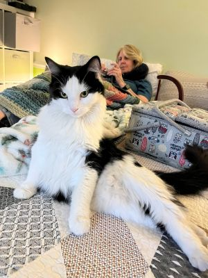

Murph the Cat
Fluffy Bilingual Cat-Language Educator Extraordinaire
Currently snuggled under a blanket near your chest | Meow loudly to reach me

Contact
Phone: LOUD MEOWS, available 24/7 (especially at 3:00 AM sharp)
Email: murph.meowz@catmail.com
LinkedIn: www.linkedin.com/in/murph-the-snuggle-professor
Portfolio: Ask to see my pineapple catnip toy
Education
Feline Street Smarts University (FSU)
Degree in Advanced Cat-Linguistics & Blanket Nesting, Class of 2024
- Graduated with honors in "Snuggling Techniques & Strategic Meowing"
- Minored in Fetch Retrieval and Loud Announcement of Desires
Skills
- Fluent in Cat, Human Baby Talk, and Dramatic Screaming
- Expert Pineapple Toy Wrestler
- Precision Fetch Player (Returns 8 out of 10 times!)
- Alarm Clock Services (Certified 3AM Operator)
- Blanket Burrito Formation & Chest-Top Napping
- Loud, emotionally persuasive meowing (for treats, cuddles, or chaos)
- Advanced "Splootology" Practitioner (Level 10)
- Minimal Shedding Technology despite Maine Coon fluff
Experience
Lead Cat-Language Educator | SnugglePaws Academy for Humans & Other Cats
2024-Present
- Trained three humans in the subtle art of "Treat Me Now or I Scream"
- Designed immersive meow-based curriculum with hands-on (paws-on?) demonstrations
- Conducted daily 3AM seminars titled "Feed Me, Foolish Mortal"
- Implemented nap-time training under blankets, chest, and occasionally laundry piles
Independent Street Scholar | Alley University of Life
2023-2024
- Rescued from stray kitten life and quickly rose to the top of the snuggle game
- Self-taught in survival, human affection manipulation, and pineapple toy diplomacy
- Earned honorary title "Sir Murph of the Fluff" by local squirrels
Fun Facts
- Fluff level: 11/10
- Shedding level: Suspiciously low
- Favorite treat: Literally anything in a crinkly bag
- Favorite quote: "MeeeeEEEeeeeeoooOOOwwwWWWWW."
References available upon request (but I'll probably ignore them and lay on your laptop)